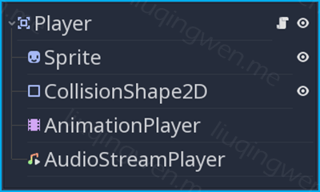
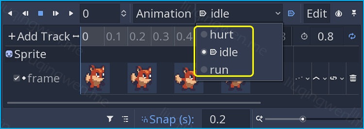
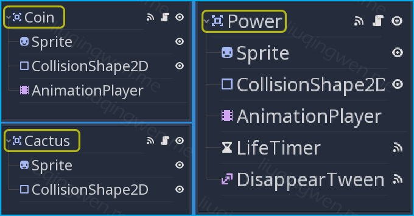
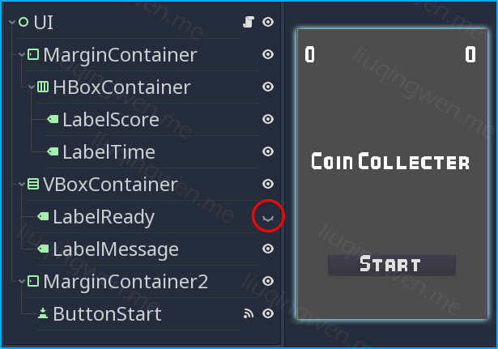
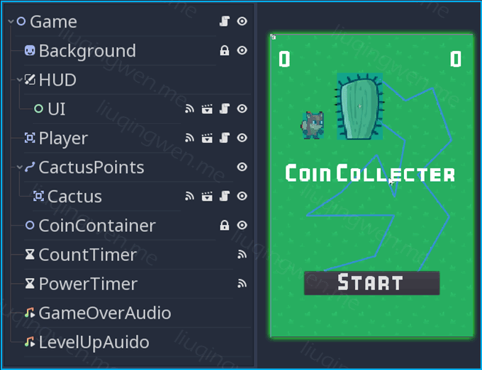

Godot3游戏引擎入门之十：介绍一些常用的节点并开发一个小游戏（中）
一、前言 在上一篇文章中 ，我们一起学习探讨了几个常用的新节点，也顺便了解一下 GDScript 脚本中几个重要关键字的用法，最后总结了我个人认为比较实用的几个所谓“最佳实践”，写了这么多的目的就是为了本篇和下一篇服务的：我们使用 Godot 3.1 Alpha2 版本制作一个小游戏。
这个游戏非常简单，网上也有不少类似的案例，本来打算只需要上下两篇文章即可，后面发现加上代码后整篇文章显得“篇幅过长”，如果通过删减一些代码来缩短篇幅的话，对新手又很不友好，所以我再加一篇，分为“上-中-下”三篇吧。
温馨提示：中篇以及下篇内容中的代码会比较多，如果对这个游戏感兴趣，而且已经入门的话，我推荐直接到我的 Github 仓库 下载源码运行查看即可，或者遇到了问题再来翻阅此文更合适。 :smile:
主要内容：分析并制作一个完整的小游戏（中篇）http://liuqingwen.me/blog/2018/12/05/introduction-of-godot-3-part-10-introduce-some-node-types-and-make-a-new-game-part-2/ http://liuqingwen.me/blog/introduction-of-godot-series/
二、正文 本篇目标
了解学习游戏中的几个主要场景的制作
编写代码实现游戏中相关功能的逻辑
完整游戏项目的一个开发流程
主要的场景 这是一个简单的“金币收集小游戏”，游戏设计的主要思路和玩法大致如下：
玩家可以在自由的世界里随处奔跑，遇到心爱的金币可以尽收囊中
玩家要避免被仙人掌刺伤，这也是游戏的唯一实体障碍物
每个关卡有超时时间设计，超时游戏结束，规定时间内收集完金币可进入下一关
每关随机冒出一个特殊“能量币”，玩家收集能量能够延长超时时间
嗯，时间紧迫，上车，赶紧出发！
1. Player 玩家子场景 玩家子场景是这个项目的最核心游戏元素，可以说是小游戏的灵魂所在。玩家子场景的制作非常简单：以碰撞体 Area2D 作为根节点，添加一个 Sprite 图片精灵、一个 CollisionShape2D 绘制碰撞区域、 AnimationPlayer 节点制作动画以及一个 AudioStreamPlayer 音频流播放节点。如果对这些节点的使用不熟悉，可以参考我之前的文章。

另外，因为我把玩家的动画图片制作成了一个 SpriteSheet 精灵图集，所以制作动画的时候需要注意图片的显示区域，玩家有三个动画状态，都比较简单，参考如下：

2. Coin/Cactus/Power 金币/障碍物/能量子场景 我把这三个小场景放到一起讨论，原因是它们的结构非常简单且很相似，都是为游戏中的“玩家”服务。三个子场景的制作一目了然，功能单一，相互独立，这也符合我们的最佳实践原则之尽量保持场景的独立性*。另外，在对游戏资源的管理中，我把这三个场景以及场景的相关资源（图片）放在了 *Items 一个文件夹下。

需要注意的是：能量币场景中的 LifeTimer 时间节点表示金币在规定时间内会自动消失，而能量币的出现时间并不由自己控制，这里不要混淆了，后面在代码中会有介绍。
3. UI 界面元素 控件子场景主要用于界面显示，主要有：金币数量、剩余时间、开始按钮、文字信息显示等。这里我使用了 MarginContainer 容器配合 HBoxContainer/VBoxContainer 来对界面元素进行排版。提醒新手朋友们：设置 MarginContainer 的边距需要在 Custom Constants 属性下进行设置。

另外 UI 子场景也用于接收玩家的键盘输入，控制游戏的一些基本逻辑：开始、暂停、重试等，这些我们都会在代码中具体实现。
4. 游戏主场景 这是游戏中最重要的场景了，也是包含并协调多个子场景的根场景。游戏的主场景中可以手动添加其他的节点或者子场景，也可以通过代码添加任意多个子场景，比如金币。同时，主场景负责并处理每个子场景之间通信链接，作为一个总指挥 让每个子场景各司其职，及时得到并处理各自的相关任务。

值得注意的是：我把障碍物场景（ Cactus ）作为子节点放在了 Path2D 路径节点之下，也就是图中的蓝色路径。场景中的 CoinContainer 为一个空节点，作为动态生成的金币节点的容器。
逻辑与代码 在 Godot 中每一个节点都能添加代码，而且最多只能关联一个脚本，一般子场景的功能相对单一，我们优先考虑给子场景的根节点添加一个脚本，而其他节点可以视需求添加，需要说明的是：子场景中需要暴露出来的供其它场景调用的公开方法最好写在根节点的脚本代码中 。
另外，实现游戏的相关功能以及逻辑代码并不是只有唯一的一种方式，你完全可以根据自己的需求、设计原则、游戏规则等来进行代码编写。 :smiley:
说明：这个小游戏的灵感和图片资源都来源于《 Godot Engine Game Development Projects 》 这本书，我参考了它的代码，但是我的设计方式与之稍有不同，比如在处理玩家和金币碰撞的逻辑上有两种方式，是在 Player 玩家场景中检测碰撞并调用 Coin 的方法，还是在 Coin 金币场景中检测碰撞并调用 Player 的方法，此书的作者采用了前者，而我选择了后者。我的观点是：游戏元素为玩家服务，玩家不需要关心游戏世界里有哪些元素。当然，运行结果完全相同。
接下面我把游戏中的主要代码贴出来供大家参考阅读，如果遇到不懂的地方可以随时翻阅我之前的文章，或者直接在 Godot 编辑器中按 F4 搜索查看相关的 API 说明，相信配合我在脚本中的注释，看懂代码的具体逻辑没什么问题。 :grin:
1. Player.gd Player.gd 1 2 3 4 5 6 7 8 9 10 11 12 13 14 15 16 17 18 19 20 21 22 23 24 25 26 27 28 29 30 31 32 33 34 35 36 37 38 39 40 41 42 43 44 45 46 47 48 49 50 51 52 53 54 55 56 57 58 59 60 61 62 63 64 65 66 67 68 69 70 71 72 73 74 75 76 77 78 79 80 81 82 83 84 extends Area2D signal coin_collected(count) signal power_collected(buffer) signal game_over() export(int) var moveSpeed = 320 export(AudioStream) var coinSound = null export(AudioStream) var hurtSound = null export(AudioStream) var powerSound = null onready var _animationPlayer = $AnimationPlayer onready var _audioPlayer = $AudioStreamPlayer onready var _sprite = $Sprite var isControllable = true setget _setIsControllable var _coins = 0 var _boundary = {minX = 0 , minY = 0 , maxX = 0 , maxY = 0 } func _ready(): var scale = _sprite.scale var rect = _sprite.get_rect() _boundary.minX = - rect.position.x * scale.x _boundary.minY = - rect.position.y * scale.y _boundary.maxX = ProjectSettings.get('display/window/size/width' ) - (rect.position.x + rect.size.x) * scale.x _boundary.maxY = ProjectSettings.get('display/window/size/height' ) - (rect.position.y + rect.size.y) * scale.y func _process(delta): var hDir = int(Input.is_action_pressed('right' )) - int(Input.is_action_pressed('left' )) var vDir = int(Input.is_action_pressed('down' )) - int(Input.is_action_pressed('up' )) var velocity = Vector2(hDir, vDir).normalized() self.position += velocity * moveSpeed * delta self.position.x = clamp(self.position.x, _boundary.minX, _boundary.maxX) self.position.y = clamp(self.position.y, _boundary.minY, _boundary.maxY) if hDir != 0 : _sprite.flip_h = hDir < 0 if hDir != 0 || vDir != 0 : _animationPlayer.current_animation = 'run' else : _animationPlayer.current_animation = 'idle' func _setIsControllable(value): if isControllable != value: isControllable = value self.set_process(isControllable) _animationPlayer.current_animation = 'idle' if ! isControllable else _animationPlayer.current_animation func restart(pos): _coins = 0 self.position = pos func collectCoin(num = 1 ): _coins += num _audioPlayer.stream = coinSound _audioPlayer.play() self.emit_signal('coin_collected' , _coins) func collectPower(buffer): _audioPlayer.stream = powerSound _audioPlayer.play() self.emit_signal('power_collected' , buffer) func hurt(): _animationPlayer.current_animation = 'hurt' _audioPlayer.stream = hurtSound _audioPlayer.play() self.set_process(false) self.emit_signal('game_over' )
玩家场景的代码部分相对较多，在此我特意标明了我的源码编写习惯，一般保持良好的代码风格是有利于游戏的调试和功能的扩展的，代码中我习惯的编码顺序是：
signal/group 信号、分组写代码文件最前export 接着是显示在编辑器中可编辑的相关变量onready 主要表示一些对场景中的节点的引用enum/constant 枚举、常亮定义部分（无实际代码）variable 普通变量定义部分（公开的、私有的）functions 最后是方法函数定义部分（公开的、私有的）
关于函数部分也要注意一些小细节， GDScript 脚本中有公开方法和私有方法，这些方法的位置可以随意，只要自己看着舒服就可以啦。其中几个关键地方我简单解释下：
self.set_process(false) 这个方法能暂停或开启 _process(delta) 方法的运行，部分类似暂停游戏self.emit_signal('power_collected', buffer) 发射信号的方法，已经讨论过了，不过这里额外添加了一个参数_audioPlayer.stream = xxx 玩家场景中只使用一个音频节点，通过设置不同的 stream 音频流可以播放不同的音效
其他部分请参考注释吧。
2. Coin.gd Coin.gd 1 2 3 4 5 6 7 8 9 10 11 12 13 14 15 16 17 18 extends Area2D export var playerName = 'Player' export var obstacleName = 'Cactus' onready var _collisionShape = $CollisionShape2D func _on_Coin_area_entered(area): if area.name == playerName && area.has_method('collectCoin' ): _collisionShape.disabled = true area.collectCoin() self.queue_free() elif area.name == obstacleName: self.queue_free()
金币节点非常简单，代码也很简洁，主要功能是：玩家收集后自动消失，同时调用玩家的收集函数 collectCoin() 。为防止调用出错，我在代码中对玩家是否有该方法做了判断。
3. Cactus.gd Cactus.gd 1 2 3 4 5 6 7 8 extends Area2D export var playerName = 'Player' func _on_Cactus_area_entered(area): if area.name == playerName && area.has_method('hurt' ): area.hurt()
这是最简单的子场景了！游戏规则就是：玩家碰到障碍物（仙人掌）后，玩家收到伤害，游戏结束。逻辑代码可以参考 Player 场景的 hurt() 方法。
4. Power.gd Power.gd 1 2 3 4 5 6 7 8 9 10 11 12 13 14 15 16 17 18 19 20 21 22 23 24 25 26 27 28 29 30 31 extends Area2D export var playerName = 'Player' export var power = 2 onready var _collisionShape = $CollisionShape2D onready var _sprite = $Sprite onready var _timer = $LifeTimer onready var _tween = $DisappearTween func _startTween(): _tween.interpolate_property(_sprite, 'modulate' , Color(1.0 , 1.0 , 1.0 , 1.0 ), Color(1.0 , 1.0 , 1.0 , 0.0 ), 0.25 , Tween.TRANS_CUBIC, Tween.EASE_IN_OUT) _tween.interpolate_property(_sprite, 'scale' , _sprite.scale, _sprite.scale * 4 , 0.25 , Tween.TRANS_CUBIC, Tween.EASE_IN_OUT) _tween.start() func _on_Power_area_entered(area): if area.name == playerName && area.has_method('collectPower' ): _collisionShape.disabled = true area.collectPower(power) _timer.stop() _startTween() func _on_LiftTimer_timeout(): self.queue_free() func _on_Tween_tween_completed(object, key): self.queue_free()
和金币、障碍物一样，也是一个很简单的子场景，不过我们使用了 Tween 节点，利用代码实现能量币的消失动画。关于 Tween 节点可以参考上一篇文章 ，对于方法中每个参数的定义可以直接查阅官方 API 文档。
其他部分 其他部分的代码以及总结部分见下篇！未完待续……
我的博客地址： http://liuqingwen.me ，欢迎关注我的微信公众号：
Comments: